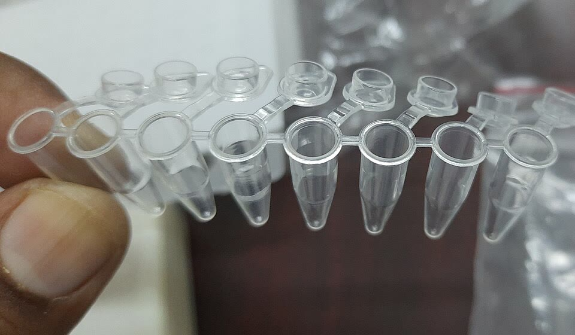

基因工程的基本操作程序（上）：获取目的基因与构建表达载体
本期导读
基因工程的基本操作程序（上） · PCR · 双酶切

视频原话 · 导读3 句
- 同学们好！这节课梳理人教版选择性必修三第三章第二节的上半部分——获取目的基因与构建基因表达载体。10.4s
- 高考常考PCR的原理、条件和计算，基因表达载体的组成，以及限制酶的选择。7.8s
- 我们按七个考点梳理，每个考点都讲清楚怎么考、怎么做。5.6s
四个基本步骤01#
① 筛选与获取
目的基因
② 构建
基因表达载体
核心
核心
③ 导入
受体细胞
④ 检测与鉴定
目的基因
易错
核心是构建基因表达载体；四步中只有导入受体细胞不涉及碱基互补配对
视频原话5 句
- 考点一，基因工程的基本操作程序，一共四步。第一步，目的基因的筛选与获取。8.2s
- 第二步，基因表达载体的构建，这是基因工程的核心。5.1s
- 第三步，将目的基因导入受体细胞。3.8s
- 第四步，目的基因的检测与鉴定。3.5s
- 易错：核心步骤是构建基因表达载体，不是获取目的基因；其中只有导入受体细胞这一步不涉及碱基互补配对。10.3s
目的基因的获取02#
目的基因：主要是编码蛋白质的基因，如苏云金杆菌的 Bt 抗虫蛋白基因
筛选：从相关的已知结构和功能清晰的基因中筛选
- 获取目的基因
- PCR 扩增最常用
- 人工合成
- 构建基因文库
解题方法
已知目的基因两端的序列、需要大量扩增时，首选 PCR
视频原话4 句
- 考点二，目的基因的筛选与获取。在基因工程中，目的基因主要是指编码蛋白质的基因，比如苏云金杆菌的Bt抗虫蛋白基因。12.2s
- 筛选：从相关的已知结构和功能清晰的基因中进行筛选，是较为有效的方法。7.7s
- 获取：常用PCR特异性地快速扩增目的基因；也可以人工合成，或通过构建基因文库来获取。9.4s
- 考法：问获取方法。解题方法：已知目的基因两端的序列、需要大量扩增时，首选PCR。9.2s
PCR的原理与过程03#
易错
PCR 不用解旋酶，靠高温解旋；耐高温的 DNA 聚合酶从引物 3′ 端延伸，子链方向 5′→3′
视频原话5 句
- 考点三，PCR的原理与过程。PCR是聚合酶链式反应，原理是DNA半保留复制。9.3s
- 第一步，变性：温度上升到 90 ℃以上，双链DNA解聚为单链。7.1s
- 第二步，复性：温度下降到 50 ℃左右，两种引物通过碱基互补配对与两条单链结合。9.1s
- 第三步，延伸：温度上升到 72 ℃左右，耐高温的DNA聚合酶从引物的3′端开始，合成新的DNA链。11.0s
- 易错：PCR不用解旋酶，靠高温解旋；子链的延伸方向是5′到3′。7.7s
PCR的条件与计算04#
条件：模板 DNA、两种引物、4 种脱氧核苷酸、耐高温的 DNA 聚合酶，缓冲液中加 Mg2+
引物：能与母链互补配对的短单链核酸，DNA 聚合酶从其 3′ 端开始延伸
| 循环轮数 | DNA 分子数 | 消耗引物数 |
|---|---|---|
| 1 | 2 | 2 |
| 2 | 4 | 6 |
| 3 | 8 | 14 |
| n | 2n | 2n+1 − 2 |
第 3 轮开始出现两条链等长的目的基因片段；n 轮后共 2n − 2n 个
解题方法
引物数 = 新合成的子链数 = 总链数 2n+1 − 2 条母链
视频原话5 句
- 考点四，PCR的条件与计算。需要：模板DNA、两种引物、4种脱氧核苷酸、耐高温的DNA聚合酶，缓冲液中一般还要添加Mg2+。14.2s
- 引物是一小段能与DNA母链的一段碱基序列互补配对的短单链核酸，使DNA聚合酶能够从引物的3′端开始连接脱氧核苷酸。12.4s
- 计算：1个DNA分子经过n轮循环，得到 2n 个DNA分子，共消耗引物 2[n+1] − 2 个。10.7s
- 第3轮循环开始出现两条链等长的目的基因片段；n轮后，这样的片段有 2n − 2n 个。9.3s
- 解题方法：引物数等于新合成的子链数——总链数减去2条母链，再一一对应。7.6s
表达载体的组成05#
目的基因：要表达的基因
启动子：位于基因上游，RNA 聚合酶识别和结合的部位，驱动转录
终止子：位于基因下游，使转录在所需要的地方停下来
标记基因：鉴别和筛选含有目的基因的细胞
考法
构建目的：使目的基因在受体细胞中稳定存在、遗传给下一代，并能表达和发挥作用
视频原话5 句
- 考点五，基因表达载体的组成。除了目的基因，还要有启动子、终止子、标记基因和复制原点。9.6s
- 启动子：位于基因上游，是RNA聚合酶识别和结合的部位，驱动基因转录出mRNA。9.0s
- {终止子|brown}：位于基因下游，使{转录在所需要的地方停下来|brown}。5.6s
- 标记基因：便于鉴别和筛选含有目的基因的细胞，常用抗生素抗性基因。7.0s
- 考法：问构建表达载体的目的。解题方法：答“使目的基因在受体细胞中稳定存在，并且可以遗传给下一代，同时使目的基因能够表达和发挥作用”。13.9s
表达载体的构建06#
双酶切（两种限制酶）：防止目的基因和载体自身环化，防止目的基因反向连接
选酶原则：不破坏目的基因；不破坏启动子、终止子、复制原点，至少保留一个标记基因
解题方法
看图选酶：先排除切点在目的基因内部的酶，再排除会切坏载体必需结构的酶
视频原话5 句
- 考点六，基因表达载体的构建。先用同种限制酶或能产生相同末端的限制酶，切割载体和含目的基因的DNA片段。11.6s
- 再用DNA连接酶把目的基因和载体连接起来，形成重组DNA。6.7s
- 常用两种不同的限制酶同时切割，也就是双酶切：可以防止目的基因和载体自身环化，还能防止目的基因反向连接。10.7s
- 选限制酶的原则：不能破坏目的基因；也不能破坏载体上的启动子、终止子、复制原点，至少保留一个标记基因。10.5s
- 解题方法：看图选酶时，先把切点在目的基因内部的酶排除，再排除会切坏载体必需结构的酶。9.3s
启动子与起始密码07#
| 比较项目 | 启动子 / 终止子 | 起始密码子 / 终止密码子 |
|---|---|---|
| 位置 | DNA 上 | mRNA 上 |
| 本质 | 一段 DNA 序列 | 三个相邻的碱基 |
| 控制 | 转录的开始 / 结束 | 翻译的开始 / 结束 |
易错
启动子不是起始密码子，终止子不是终止密码子：一个看 DNA 和转录，一个看 mRNA 和翻译
视频原话3 句
- 考点七，启动子与起始密码子、终止子与终止密码子的区别。启动子和终止子，是DNA上的一段序列，控制的是转录。11.9s
- 起始密码子和终止密码子，位于mRNA上，控制的是翻译的开始和结束。7.3s
- 易错：启动子不是起始密码子；终止子不是终止密码子。一个看DNA和转录，一个看mRNA和翻译。10.7s
易错速查✓
先自己判断，再点按钮查看对错与解析。
- 1基因工程的核心是构建基因表达载体说法正确。
- 2PCR中用解旋酶使DNA双链解开说法错误：靠高温（90 ℃以上）变性解旋
- 3PCR需要耐高温的DNA聚合酶说法正确。
- 4n轮循环共需要2n个引物说法错误：需要2[n+1] − 2个引物
- 5启动子是mRNA上起始翻译的序列说法错误：启动子是DNA上RNA聚合酶识别结合的部位
- 6双酶切可防止目的基因和载体自身环化说法正确。
核心是构建，PCR 靠温度！
视频原话 · 易错速查5 句
- 最后，用六道判断题检验一下。3.6s
- 判断一：基因工程的核心是构建基因表达载体？对。判断二：PCR用解旋酶解开双链？错，靠高温变性。12.1s
- 判断三：PCR需要耐高温的DNA聚合酶？对。判断四：n轮循环需要2n个引物？错，是2[n+1] − 2个。14.1s
- 判断五：启动子是mRNA上起始翻译的序列？错。判断六：双酶切可以防止自身环化？对。11.0s
- 七个考点串成一条线：核心是构建，PCR靠温度。我们下期再见！7.2s
图片来源
图片来源：Wikimedia Commons —— Ajay Kumar Chaurasiya《PCR Tubes》CC BY-SA 4.0（裁切）
Photo: Ajay Kumar Chaurasiya, CC BY-SA 4.0